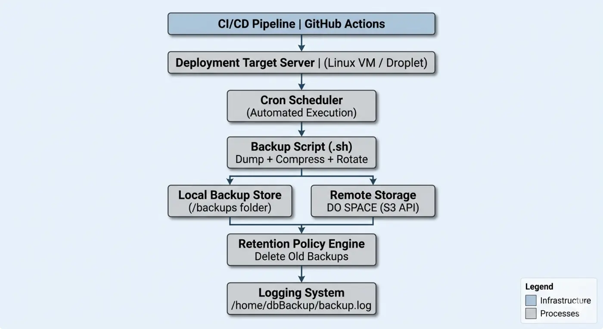

Reliability
Automated Database Backup
Scheduled, encrypted backups with retention and restore testing.
Overview
A reliable, automated database backup system built for data durability, integrity and rapid recovery.
Problem
Manual backup processes were inconsistent and prone to human error, risking data loss and leaving no recovery guarantees during incidents.
Solution
- Scheduled backups using cron jobs / CI pipelines
- Secure storage in cloud or remote servers
- Retention policy for lifecycle management
- Compression and encryption of backup data
- Automated restore testing for validation
Architecture

Impact
- Improved data safety and reliability
- Reduced operational risk and human error
- Enabled fast recovery during incidents
- Supported data retention policies
Lessons learned
- Backups are useless without tested restore procedures
- Encryption is critical for sensitive data
- Monitoring and alerting should be integrated